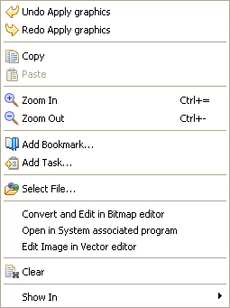

Figure : Editor
The
key functions in the editor are:

- Selecting components from the displayed screen to enable editing.
- Editing of components and copying the image of components.
- You can change colors of the component
Context menus
The Editor offers two context menus depending on whether the mouse pointer is:- Over a theme element.

- Elsewhere in the editor.